It is sometimes desirable to connect the outputs of one or more delays in a network back into their own or each others' inputs. Instead of getting one or several echos of the original sound as in the example above, we can potentially get an infinite number of echos, each one feeding back into the network to engender yet others.
The simplest example of a recirculating network is the
recirculating comb filter
whose block diagram is shown in Figure 7.7. As with the
earlier, simple comb filter, the input signal is sent down a delay line whose
length is  samples. But now the delay line's
output is also fed back to its input; the delay's input is the sum of
the original input and the delay's output. The output is
multiplied by a number
samples. But now the delay line's
output is also fed back to its input; the delay's input is the sum of
the original input and the delay's output. The output is
multiplied by a number  before feeding it back into its input.
before feeding it back into its input.
| 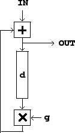 |
The time domain behavior of the recirculating comb filter is shown in Figure
7.8. Here we consider the effect of sending an impulse into the
network. We get back the original impulse, plus a series of echos, each
in turn  samples after the previous one, and multiplied each time by the
gain
samples after the previous one, and multiplied each time by the
gain  . In general, a delay network's output given an impulse as input is
called the network's
impulse response.
. In general, a delay network's output given an impulse as input is
called the network's
impulse response.
Note that we have chosen a gain  that is less than one in absolute value.
If we chose a gain greater than one (or less than -1), each echo would have
a larger magnitude than the previous one. Instead of falling exponentially
as they do in the figure, they would grow exponentially. A recirculating
network whose output eventually falls toward zero after its input terminates
is called
stable;
one whose output grows without bound is called unstable.
that is less than one in absolute value.
If we chose a gain greater than one (or less than -1), each echo would have
a larger magnitude than the previous one. Instead of falling exponentially
as they do in the figure, they would grow exponentially. A recirculating
network whose output eventually falls toward zero after its input terminates
is called
stable;
one whose output grows without bound is called unstable.
We can also analyse the recirculating comb filter in the frequency domain. The situation is now quite hard to analyze using real sinusoids, and so we get the first big payoff for having introduced complex numbers, which greatly simplify the analysis.
If, as before, we feed the input with the signal,
A faster (but slightly less intuitive) method to get the same result is to
examine the recirculating network itself to yield an equation for  , as
follows. We named the input
, as
follows. We named the input  and the output
and the output  . The signal going
into the delay line is the output
. The signal going
into the delay line is the output  , and passing this through the delay
line and multiplier gives
, and passing this through the delay
line and multiplier gives
Now we would like to make a graph of the frequency response (the gain as a
function of frequency) as
we did for non-recirculating comb filters in
Figure 7.6. This
again requires that we make a preliminary picture in the complex plane. We
would like to estimate the magnitude of  equal to:
equal to:
| 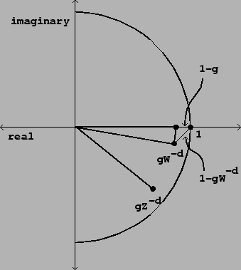 |
| 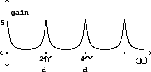 |
Figure 7.9 can be used to analyze how the frequency response
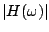 should
behave
qualitatively as a function of  . The height and bandwidth of the peaks
both depend on
. The height and bandwidth of the peaks
both depend on  . The maximum value that
. The maximum value that  can attain is
when
can attain is
when
The next important question is the bandwidth of the peaks in the frequency
response. So we would like to find sinusoids 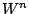, with frequency
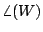, giving rise to a value of  that is, say, 3 decibels below the
maximum. To do this, we return to Figure 7.9, and try to place
that is, say, 3 decibels below the
maximum. To do this, we return to Figure 7.9, and try to place  so that the distance from the point 1 to the point 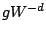 is about
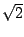 times the distance from 1 to
so that the distance from the point 1 to the point 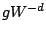 is about
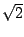 times the distance from 1 to  (since :1 is a ratio of
approximately 3 decibels).
(since :1 is a ratio of
approximately 3 decibels).
We do this by arranging for the imaginary part of
to be roughly 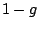 or its negative, making a nearly isosceles right
triangle between the points 1, , and . (Here we're supposing that
 is at least 2/3 or so; otherwise this approximation isn't very good). The
hypotenuse of a right isosceles triangle is always times the leg,
and so the gain drops by that factor compared to its maximum.
is at least 2/3 or so; otherwise this approximation isn't very good). The
hypotenuse of a right isosceles triangle is always times the leg,
and so the gain drops by that factor compared to its maximum.
We now make another approximation, that the imaginary part of
is approximately the angle in radians it cuts from the real axis:
As with the non-recirculating comb filter of Section 7.3, the
teeth of the comb are closer together for larger values of the delay  . On
the other hand, a delay of 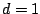 (the shortest possible) gets only one tooth
(at zero frequency) below the Nyquist frequency
. On
the other hand, a delay of 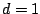 (the shortest possible) gets only one tooth
(at zero frequency) below the Nyquist frequency  (the next tooth, at
(the next tooth, at
 , corresponds again to a frequency of zero by foldover).
So the recirculating comb filter with is just a low-pass filter.
Delay networks
with one-sample delays will be the basis for designing many other kinds of
digital
filters in Chapter 8.
, corresponds again to a frequency of zero by foldover).
So the recirculating comb filter with is just a low-pass filter.
Delay networks
with one-sample delays will be the basis for designing many other kinds of
digital
filters in Chapter 8.